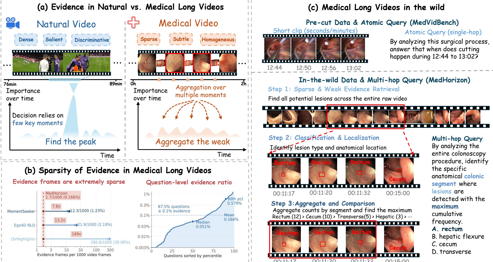
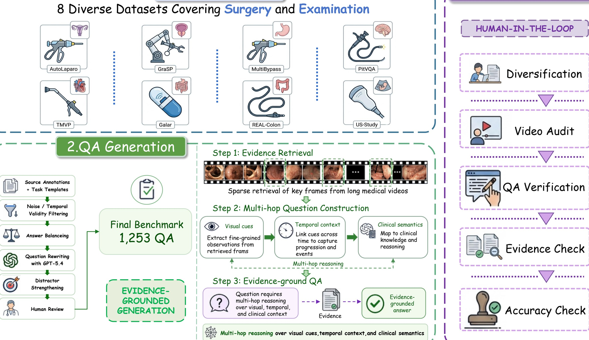
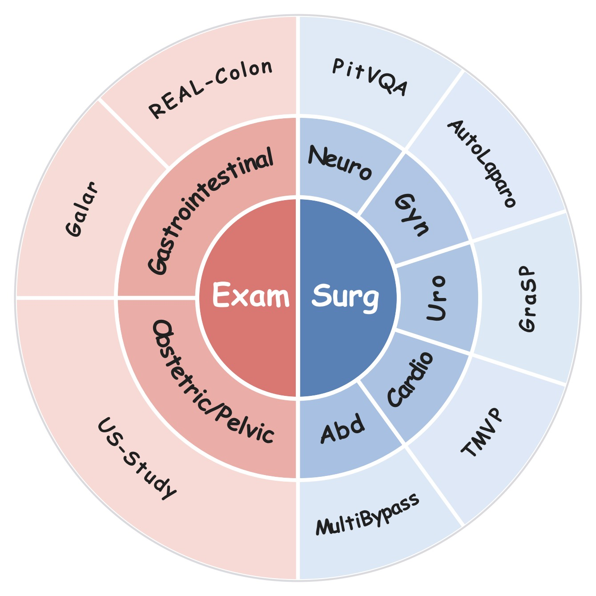
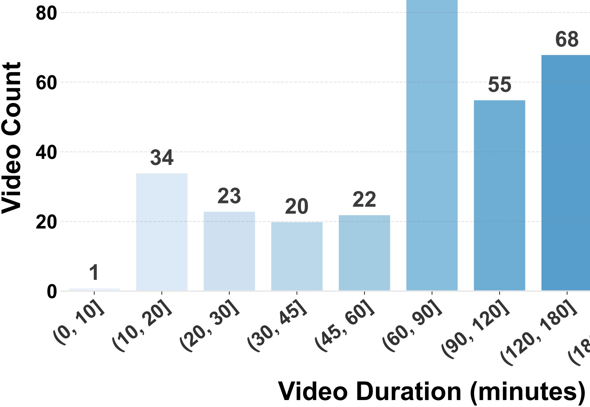
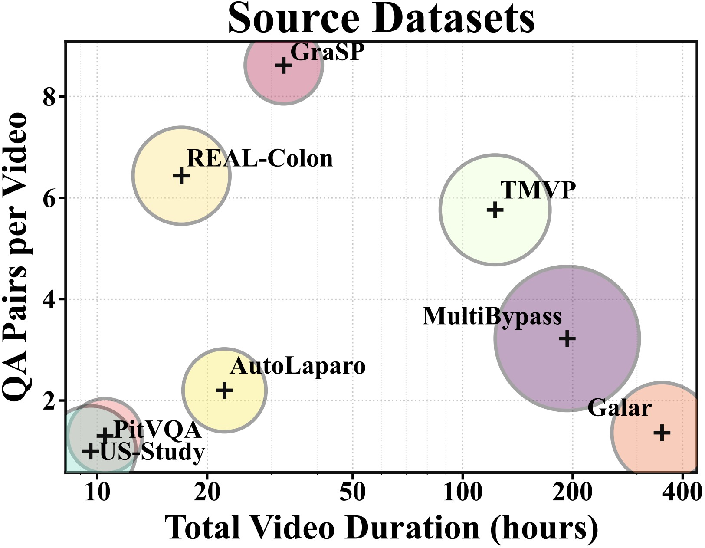
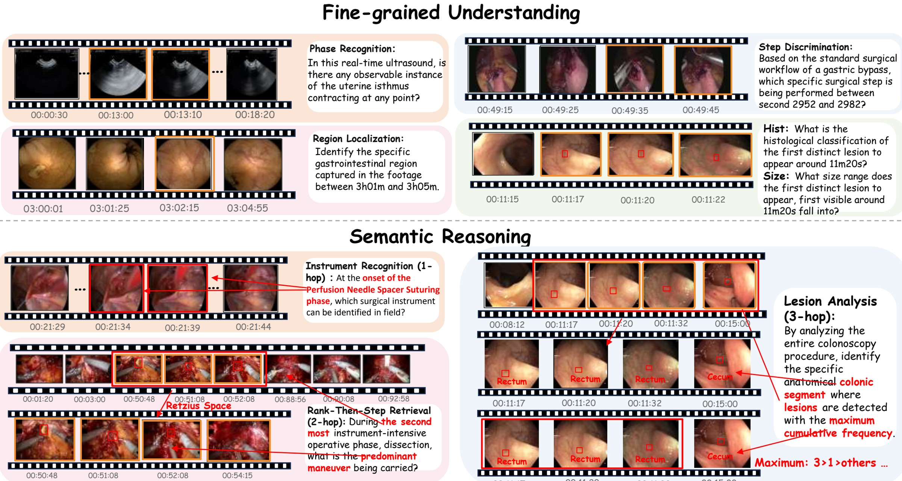
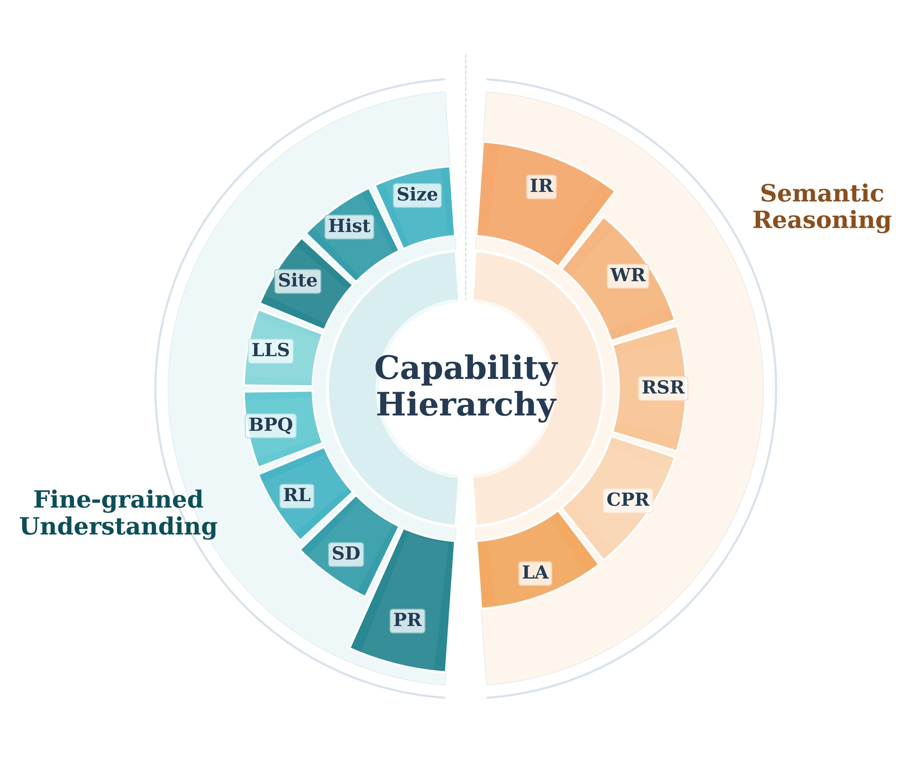
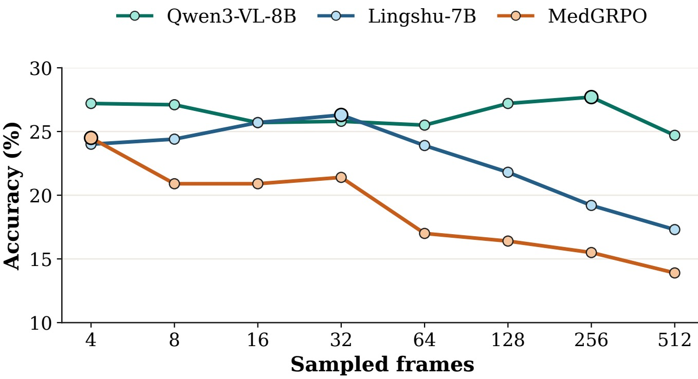
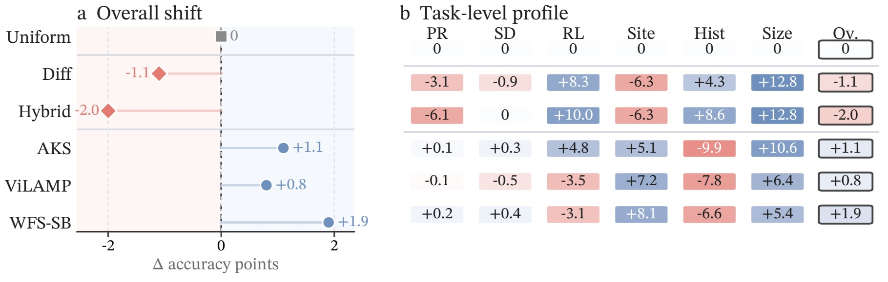

Sparse Evidence
Decisive cues occupy only 1.7 frames per 1,000 video frames on average. Models must retrieve weak evidence before reasoning.
Long-context Medical Video Benchmark
Towards long-context medical video understanding in the wild.
MedHorizon evaluates whether multimodal models can search raw, redundant clinical videos for sparse and subtle evidence, bind it to anatomical and temporal context, and answer multi-hop clinical questions over full procedures.

Latest paper teaser: MedHorizon targets sparse, subtle, and homogeneous evidence in medical long videos, and evaluates full-procedure retrieval plus multi-hop clinical reasoning rather than pre-cut clip QA.
Core Claim
Decisive cues occupy only 1.7 frames per 1,000 video frames on average. Models must retrieve weak evidence before reasoning.
Answer-relevant details can be small lesions, instruments, anatomical regions, or local quality cues that are hard to distinguish from nearby frames.
Long clinical procedures contain many visually similar frames, making attention and sampling drift toward redundant but non-decisive content.
Semantic questions require locating events, binding them to clinical context, and aggregating observations across distant moments.
Benchmark Construction
MedHorizon is built from 8 public medical video sources spanning diagnostic examination and surgery. The construction pipeline collects source annotations, retrieves evidence from full videos, filters ambiguous candidates, strengthens distractors, rewrites questions into natural clinical language, and applies human-in-the-loop verification.

Dataset Coverage



Task Examples

Task Taxonomy
Fine-grained understanding covers PR, SD, RL, BPQ, LLS, Site, Hist, and Size. Semantic reasoning covers IR, WR, RSR, CPR, and LA, increasing from one-hop visual-semantic recognition to three-hop aggregation over distributed observations.

Main Results
The strongest evaluated model reaches only 41.1% overall accuracy. Most open-source and medical MLLMs remain around the mid-20s, revealing a gap between short-video competence and full-procedure clinical reasoning.
| Rank | Model | Family | Input | Overall Acc. |
|---|---|---|---|---|
| 1 | Gemini-3.1-Pro-Preview | Closed-source MLLM | 1 FPS | 41.1 |
| 2 | GPT-5.4 | Closed-source MLLM | 1 FPS | 32.6 |
| 3 | GPT-5.4-mini | Closed-source MLLM | 1 FPS | 31.2 |
| 4 | LLaVA-Video-72B | Open-source MLLM | 1 FPS | 29.4 |
| 5 | Kimi-K2.5 | Closed-source MLLM | 1 FPS | 29.3 |
| 6 | WFS-SB | Specialized long-video method | 128 | 28.1 |
| 7 | Qwen3.5-Plus | Closed-source MLLM | 1 FPS | 28.1 |
| 8 | Lingshu-32B | Medical MLLM | 1 FPS | 27.9 |
| 9 | InternVL3.5-8B | Open-source MLLM | 64 | 27.0 |
| 10 | Hulu-Med-7B | Medical MLLM | 1 FPS | 26.2 |
Diagnostic Analysis
More sampled frames do not yield monotonic gains. Extra context can introduce near-duplicate anatomy, low-information segments, and visually similar distractors.

Text-only accuracy stays near random; uniform full-video sampling gives limited gains; oracle GT-images improve performance but still remain below diagnostic reliability.

Order perturbation hurts performance only modestly, suggesting current models capture coarse temporal cues but not robust procedural structure.

Frame- and patch-level attention stays diffuse across similar content instead of concentrating on sparse answer-relevant evidence.

Uniform sampling is stable but evidence-agnostic. Change-focused and specialized samplers help selected local tasks, but improvements remain modest and task-dependent.

Release
The Hugging Face release provides the evaluation-only test split, relative video paths, and full US-Study videos. The GitHub repository provides a lightweight evaluation script and project page source.
Citation
@misc{medhorizon2026,
title = {MedHorizon: Towards Long-context Medical Video Understanding in the Wild},
author = {Anonymous},
year = {2026},
note = {Dataset benchmark}
}